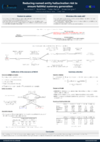

Reverse-Engineering Decoding Strategies Given Blackbox Access to a Language Generation System
Daphne Ippolito, Nicholas Carlini, Katherine Lee, Milad Nasr, Yun William Yu
In Sessions:
INLG Poster session +flash: (Wednesday, 15:40 CEST, Foyer , Chat on Discord )
Poster

Abstract:
Neural language models are increasingly deployed into APIs and websites that allow a user to pass in a prompt and receive generated text. Many of these systems do not reveal generation parameters. In this paper, we present methods to reverse-engineer the decoding method used to generate text (i.e., top-_k_ or nucleus sampling). Our ability to discover which decoding strategy was used has implications for detecting generated text. Additionally, the process of discovering the decoding strategy can reveal biases caused by selecting decoding settings which severely truncate a model's predicted distributions. We perform our attack on several families of open-source language models, as well as on production systems (e.g., ChatGPT).